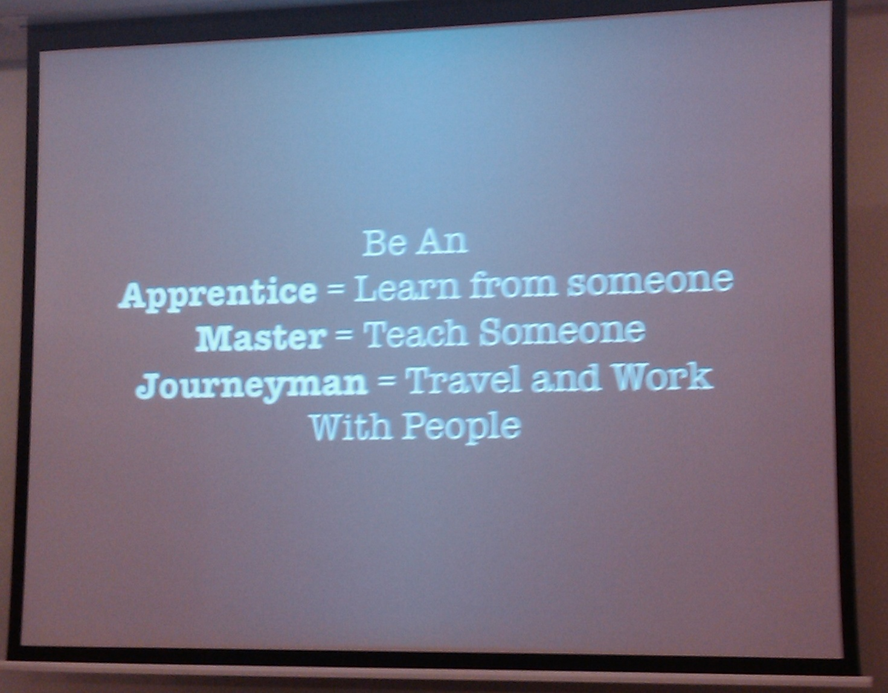

Apprenticeship
Program
Posez des questions !

Sommaire
- Mentorship
- Manifesto Craftsmanship
- Apprenticeship
- Organisation et programme d'apprentissage
Mentorship
Mentorship is a relationship in which a more experienced or more knowledgeable person helps to guide a less experienced or less knowledgeable person. The mentor may be older or younger than the person being mentored, but she or he must have a certain area of expertise. It is a learning and development partnership between someone with vast experience and someone who wants to learn.
Mentorship comment faire ?
Mentorship is a relationship in which a more experienced or more knowledgeable person helps to guide a less experienced or less knowledgeable person.
The mentor may be older or younger than the person being mentored, but she or he must have a certain area of expertise. It is a learning and development partnership between someone with vast experience and someone who wants to learn.
Mentorship
Mentorship comment faire ?
- le choix des mentor/"protégé" est fait par consentement des deux personnes
- Ateliers et Kata sont fait est discutés avec le mentor
- un mentor "encarde" une personne pour une technique/technologie qu'il matrise
- des points sont organisé entre le mentor et son "protégé" de façon infromelle
- le suivi est fait lors des points infromels
- lors des missions d'expertise avec le mentor un "protégé" peut y aller en pair
Mentorship
Manifesto Craftsmanship
Problématique du langage unique en France
Apprentices join 8th Light with a diverse range of skills and past experiences, necessitating an individualized curriculum designed to cater to the specific needs of each apprentice.
Our software crafters are software
generalists who rotate regularly through client projects that feature new and interesting problems in a wide variety of technologies.
Apprenticeship

Comment on s'organise pour ?
- une journée par semaine ici
- kata par pair
- pc obligatoire
- Engagement à s'exercer
- le faire à son rythmecomme on le sent